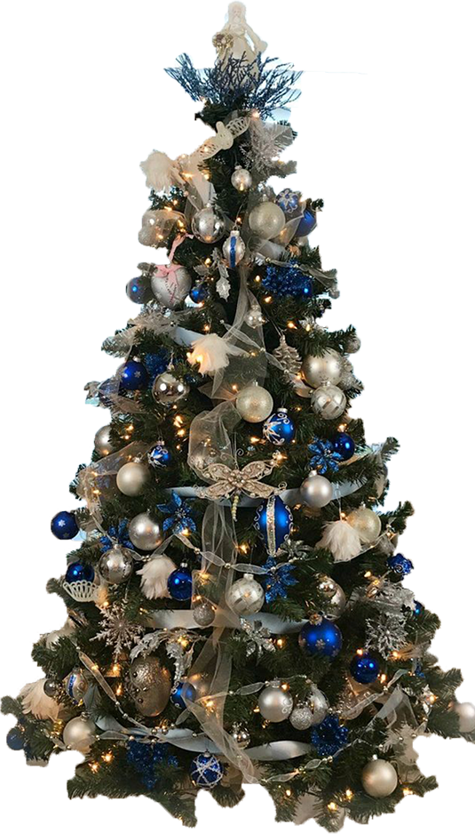
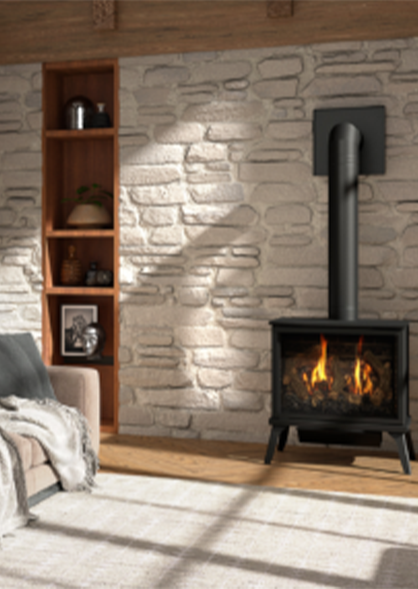
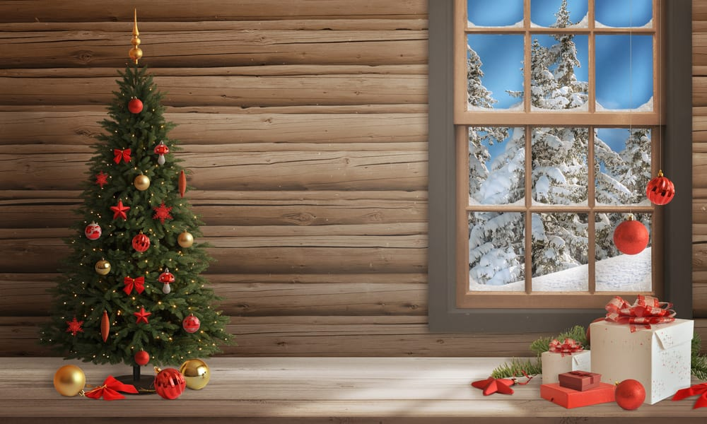
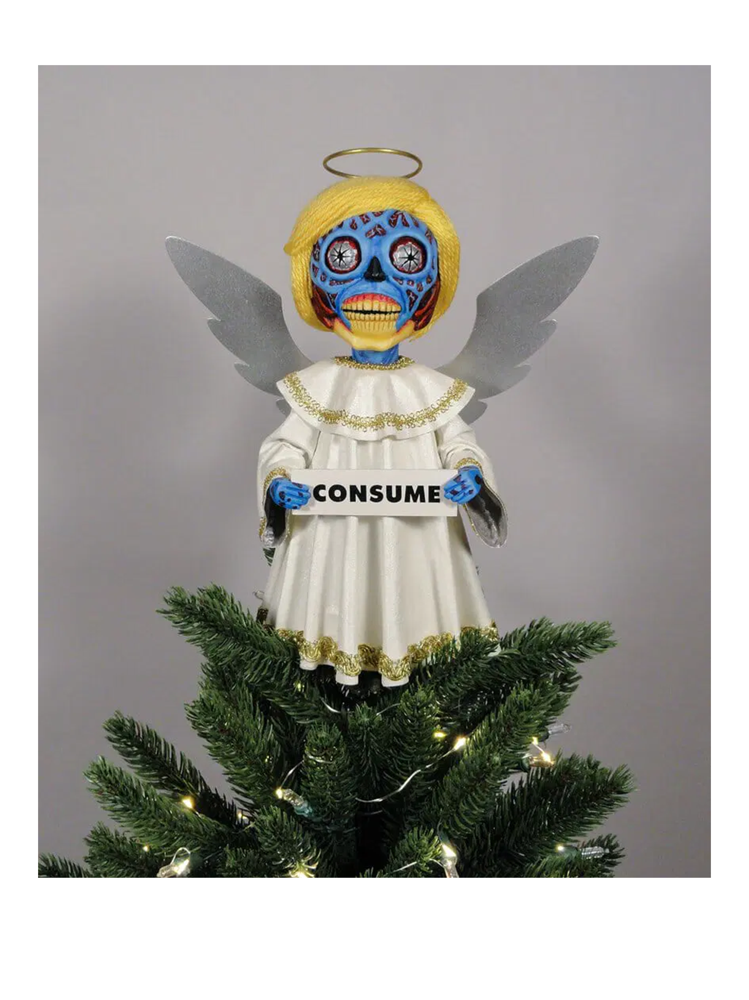
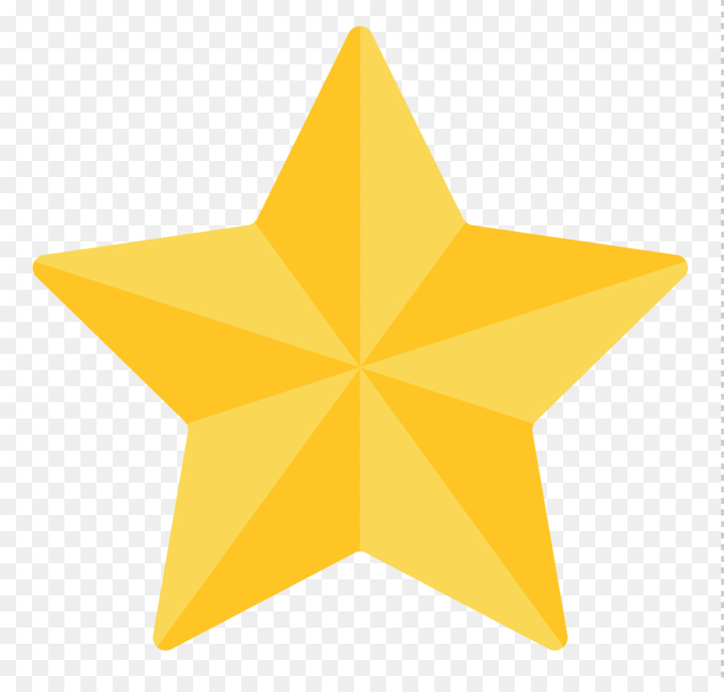
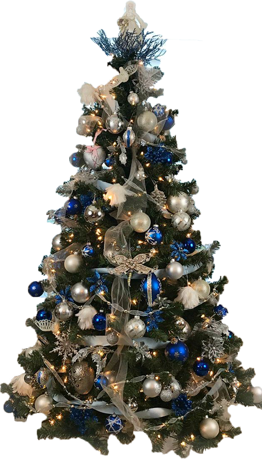
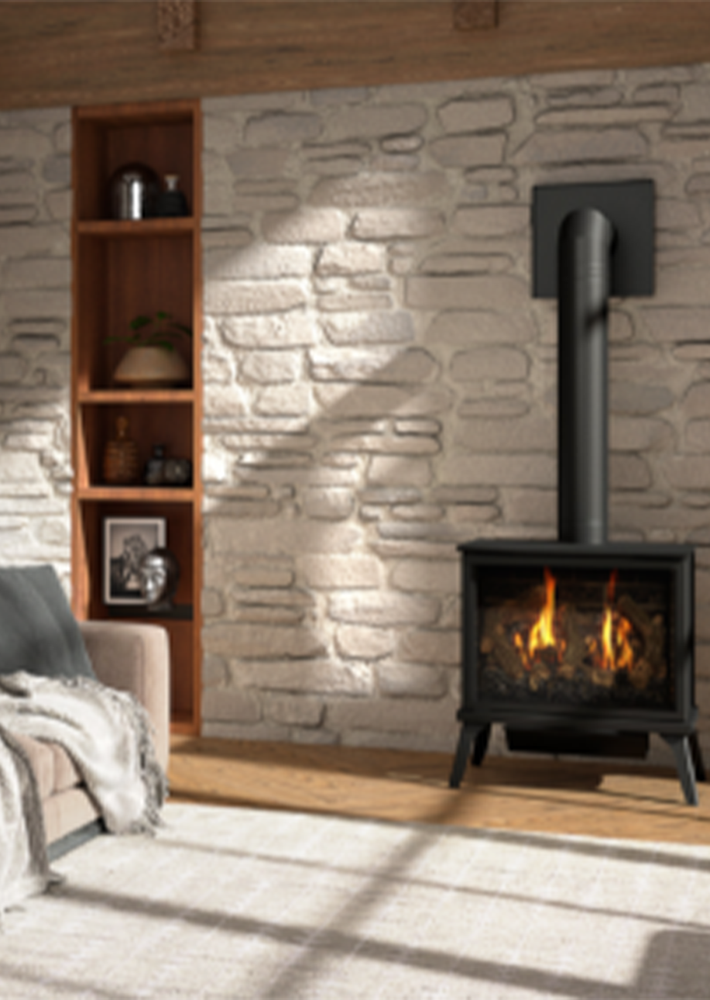
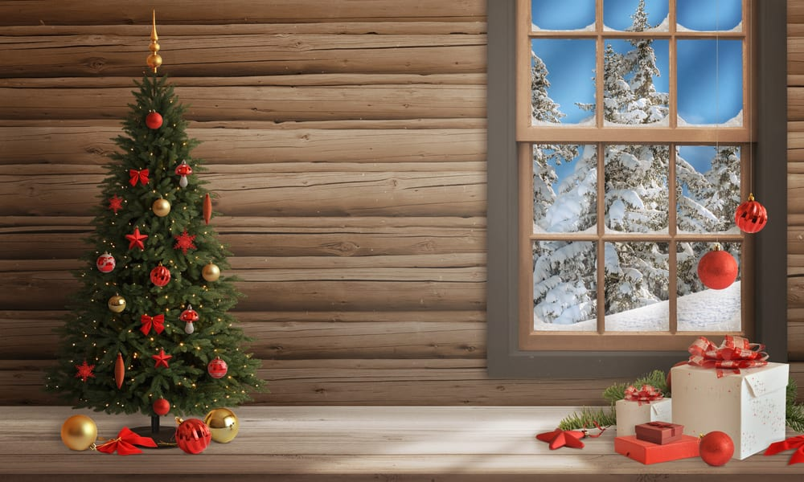
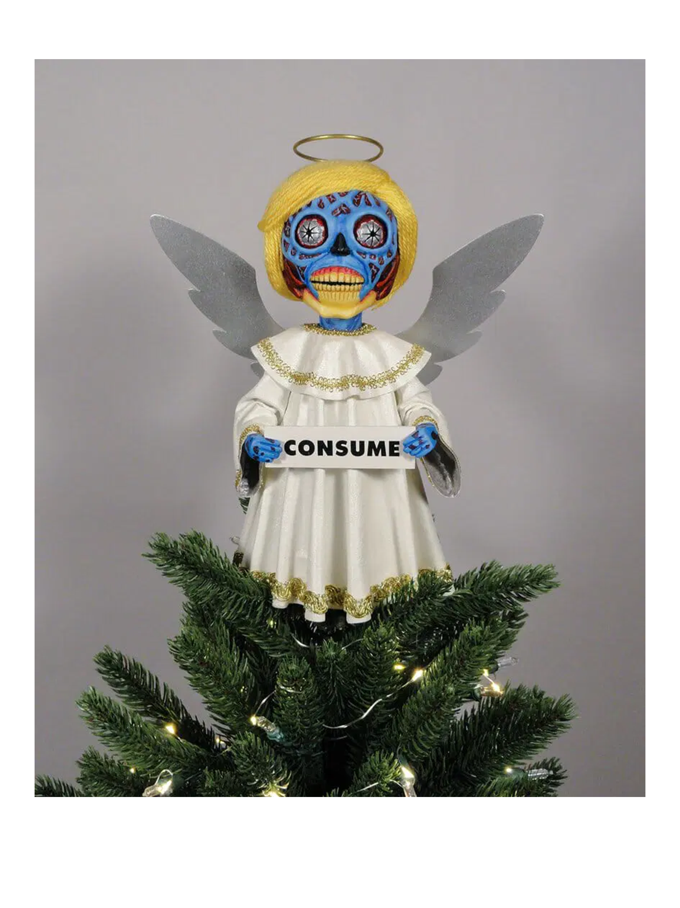
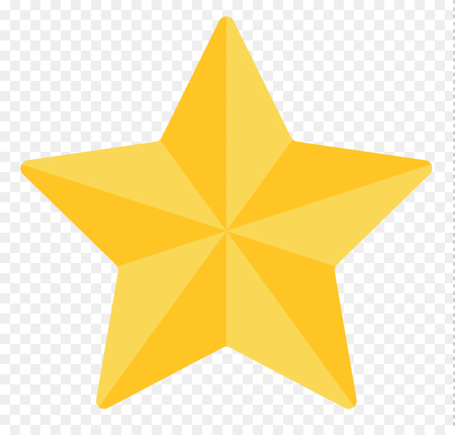

Set Your Scene...
Click your tree to begin!
Choose your background!
 Choose your favourite ornament!


Pick A Topper...
 Click your tree to begin!
Choose your background!
 Choose your favourite ornament!
Pick A Topper...
 The moments in this class that I am most proud of would have to be my biography page, which is linked below in the footer. I am specifically proud of the project because I got to showcase the thing that I love, in a creative way in which I enjoy to do. I love having creative independance and being able to show what speaks to me personally.
I am also very proud of my MadLibs we created in class. This project allowed me to express myself not only on the webpage, but also in my writing. A lot of my life I have struggled with reading and writing, but being able to take something I wrote and feature it in a new fun way. It helped me remember why I am in this program and what makes me love it so much... Even when the workload becomes to much.
A tough situation that I have been in and I was able to work through was actually on this assignment. JavaScript was very difficult for me and made me question a lot about my life. But having my friends to lean on a support me while working on it has been a key thing that I have relied on heavily. Being able to read through eachothers work and find mistakes or de-bug, it has helped not only have a functioning website but has helped me with finding my own mistakes and de-bugging my own material at a faster rate.
I honestly loved everything about this class, the energy of the class and the staff was always positive and motivating. I liked that we took lots of breaks to help those who were falling behind due to technical issues. Although it was a tough class due to the density of material, the work put in was worth every hour spent. The only thing I would recommend changing would just be the speed, there are moments when the material is being taught a little to fast and it can be difficult to keep up with. Specifically when we are changing between tabs and programs.
The biggest thing I would go back and change for myself is to ask more questions. More often than not I get anxious about asking questions, even though I know it is silly. But, I would push myself to raise my hand more often or stay after class to have a conversation about what I am having troubles with.
Even though not asking questions did cause me to go a tad slower on my assignments, it also allowed me troubleshoot and find mistakes in my work faster. It allowed to explore the programs we are using and expand my knowledge on what they can do. We did not end up using some of the tools that I discovered, but that hasn't stopped my from showing off just a little bit!